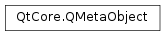

QMetaObject¶
Synopsis¶
Functions¶
- def
cast(obj) - def
cast(obj) - def
classInfo(index) - def
classInfoCount() - def
classInfoOffset() - def
className() - def
constructor(index) - def
constructorCount() - def
enumerator(index) - def
enumeratorCount() - def
enumeratorOffset() - def
indexOfClassInfo(name) - def
indexOfConstructor(constructor) - def
indexOfEnumerator(name) - def
indexOfMethod(method) - def
indexOfProperty(name) - def
indexOfSignal(signal) - def
indexOfSlot(slot) - def
inherits(metaObject) - def
method(index) - def
methodCount() - def
methodOffset() - def
newInstance([val0=QGenericArgument(nullptr)[, val1=QGenericArgument()[, val2=QGenericArgument()[, val3=QGenericArgument()[, val4=QGenericArgument()[, val5=QGenericArgument()[, val6=QGenericArgument()[, val7=QGenericArgument()[, val8=QGenericArgument()[, val9=QGenericArgument()]]]]]]]]]]) - def
property(index) - def
propertyCount() - def
propertyOffset() - def
superClass() - def
userProperty()
Static functions¶
- def
checkConnectArgs(signal, method) - def
checkConnectArgs(signal, method) - def
connectSlotsByName(o) - def
disconnect(sender, signal_index, receiver, method_index) - def
disconnectOne(sender, signal_index, receiver, method_index) - def
invokeMethod(obj, member, arg__3, ret[, val0=QGenericArgument(nullptr)[, val1=QGenericArgument()[, val2=QGenericArgument()[, val3=QGenericArgument()[, val4=QGenericArgument()[, val5=QGenericArgument()[, val6=QGenericArgument()[, val7=QGenericArgument()[, val8=QGenericArgument()[, val9=QGenericArgument()]]]]]]]]]]) - def
invokeMethod(obj, member, ret[, val0=QGenericArgument(nullptr)[, val1=QGenericArgument()[, val2=QGenericArgument()[, val3=QGenericArgument()[, val4=QGenericArgument()[, val5=QGenericArgument()[, val6=QGenericArgument()[, val7=QGenericArgument()[, val8=QGenericArgument()[, val9=QGenericArgument()]]]]]]]]]]) - def
invokeMethod(obj, member, type[, val0=QGenericArgument(nullptr)[, val1=QGenericArgument()[, val2=QGenericArgument()[, val3=QGenericArgument()[, val4=QGenericArgument()[, val5=QGenericArgument()[, val6=QGenericArgument()[, val7=QGenericArgument()[, val8=QGenericArgument()[, val9=QGenericArgument()]]]]]]]]]]) - def
invokeMethod(obj, member[, val0=QGenericArgument(nullptr)[, val1=QGenericArgument()[, val2=QGenericArgument()[, val3=QGenericArgument()[, val4=QGenericArgument()[, val5=QGenericArgument()[, val6=QGenericArgument()[, val7=QGenericArgument()[, val8=QGenericArgument()[, val9=QGenericArgument()]]]]]]]]]]) - def
normalizedSignature(method) - def
normalizedType(type)
Detailed Description¶
The
PySide2.QtCore.QMetaObjectclass contains meta-information about Qt objects.The Qt Meta-Object System in Qt is responsible for the signals and slots inter-object communication mechanism, runtime type information, and the Qt property system. A single
PySide2.QtCore.QMetaObjectinstance is created for eachPySide2.QtCore.QObjectsubclass that is used in an application, and this instance stores all the meta-information for thePySide2.QtCore.QObjectsubclass. This object is available asQObject.metaObject().This class is not normally required for application programming, but it is useful if you write meta-applications, such as scripting engines or GUI builders.
The functions you are most likely to find useful are these:
PySide2.QtCore.QMetaObject.className()returns the name of a class.PySide2.QtCore.QMetaObject.superClass()returns the superclass’s meta-object.PySide2.QtCore.QMetaObject.method()andPySide2.QtCore.QMetaObject.methodCount()provide information about a class’s meta-methods (signals, slots and otherinvokablemember functions).PySide2.QtCore.QMetaObject.enumerator()andPySide2.QtCore.QMetaObject.enumeratorCount()and provide information about a class’s enumerators.PySide2.QtCore.QMetaObject.propertyCount()andPySide2.QtCore.QMetaObject.property()provide information about a class’s properties.PySide2.QtCore.QMetaObject.constructor()andPySide2.QtCore.QMetaObject.constructorCount()provide information about a class’s meta-constructors.The index functions
PySide2.QtCore.QMetaObject.indexOfConstructor(),PySide2.QtCore.QMetaObject.indexOfMethod(),PySide2.QtCore.QMetaObject.indexOfEnumerator(), andPySide2.QtCore.QMetaObject.indexOfProperty()map names of constructors, member functions, enumerators, or properties to indexes in the meta-object. For example, Qt usesPySide2.QtCore.QMetaObject.indexOfMethod()internally when you connect a signal to a slot.Classes can also have a list of name –value pairs of additional class information, stored in
PySide2.QtCore.QMetaClassInfoobjects. The number of pairs is returned byPySide2.QtCore.QMetaObject.classInfoCount(), single pairs are returned byPySide2.QtCore.QMetaObject.classInfo(), and you can search for pairs withPySide2.QtCore.QMetaObject.indexOfClassInfo().
-
class
PySide2.QtCore.QMetaObject¶
-
PySide2.QtCore.QMetaObject.Call¶ Constant Description QMetaObject.InvokeSlot QMetaObject.EmitSignal QMetaObject.ReadProperty QMetaObject.WriteProperty QMetaObject.ResetProperty QMetaObject.QueryPropertyDesignable QMetaObject.QueryPropertyScriptable QMetaObject.QueryPropertyStored QMetaObject.QueryPropertyEditable QMetaObject.QueryPropertyUser QMetaObject.CreateInstance
-
PySide2.QtCore.QMetaObject.cast(obj)¶ Parameters: obj – PySide2.QtCore.QObjectReturn type: PySide2.QtCore.QObjectReturns
objif objectobjinherits from this meta-object; otherwise returns 0.
-
PySide2.QtCore.QMetaObject.cast(obj) Parameters: obj – PySide2.QtCore.QObjectReturn type: PySide2.QtCore.QObjectReturns
objif objectobjinherits from this meta-object; otherwise returns 0.
-
static
PySide2.QtCore.QMetaObject.checkConnectArgs(signal, method)¶ Parameters: - signal –
PySide2.QtCore.QMetaMethod - method –
PySide2.QtCore.QMetaMethod
Return type: PySide2.QtCore.boolThis is an overloaded function.
Returns
trueif thesignalandmethodarguments are compatible; otherwise returnsfalse.- signal –
-
static
PySide2.QtCore.QMetaObject.checkConnectArgs(signal, method) Parameters: - signal – str
- method – str
Return type: PySide2.QtCore.boolReturns
trueif thesignalandmethodarguments are compatible; otherwise returnsfalse.Both
signalandmethodare expected to be normalized.
-
PySide2.QtCore.QMetaObject.classInfo(index)¶ Parameters: index – PySide2.QtCore.intReturn type: PySide2.QtCore.QMetaClassInfoReturns the meta-data for the item of class information with the given
index.Example:
class MyClass: Q_CLASSINFO("author", "Sabrina Schweinsteiger") Q_CLASSINFO("url", "http://doc.moosesoft.co.uk/1.0/") ...
-
PySide2.QtCore.QMetaObject.classInfoCount()¶ Return type: PySide2.QtCore.intReturns the number of items of class information in this class.
-
PySide2.QtCore.QMetaObject.classInfoOffset()¶ Return type: PySide2.QtCore.intReturns the class information offset for this class; i.e. the index position of this class’s first class information item.
If the class has no superclasses with class information, the offset is 0; otherwise the offset is the sum of all the class information items in the class’s superclasses.
-
PySide2.QtCore.QMetaObject.className()¶ Return type: str Returns the class name.
-
static
PySide2.QtCore.QMetaObject.connectSlotsByName(o)¶ Parameters: o – PySide2.QtCore.QObjectSearches recursively for all child objects of the given
object, and connects matching signals from them to slots ofobjectthat follow the following form:def on_<object name>_<signal name>(<signal parameters>)
Let’s assume our object has a child object of type
QPushButtonwith theobject namebutton1. The slot to catch the button’sclicked()signal would be:def on_button1_clicked()
If
objectitself has a properly set object name, its own signals are also connected to its respective slots.See also
-
PySide2.QtCore.QMetaObject.constructor(index)¶ Parameters: index – PySide2.QtCore.intReturn type: PySide2.QtCore.QMetaMethodReturns the meta-data for the constructor with the given
index.
-
PySide2.QtCore.QMetaObject.constructorCount()¶ Return type: PySide2.QtCore.intReturns the number of constructors in this class.
-
static
PySide2.QtCore.QMetaObject.disconnect(sender, signal_index, receiver, method_index)¶ Parameters: - sender –
PySide2.QtCore.QObject - signal_index –
PySide2.QtCore.int - receiver –
PySide2.QtCore.QObject - method_index –
PySide2.QtCore.int
Return type: PySide2.QtCore.bool- sender –
-
static
PySide2.QtCore.QMetaObject.disconnectOne(sender, signal_index, receiver, method_index)¶ Parameters: - sender –
PySide2.QtCore.QObject - signal_index –
PySide2.QtCore.int - receiver –
PySide2.QtCore.QObject - method_index –
PySide2.QtCore.int
Return type: PySide2.QtCore.boolDisconnect a single signal connection. If QMetaObject::connect() has been called multiple times for the same sender, signal_index, receiver and method_index only one of these connections will be removed.
- sender –
-
PySide2.QtCore.QMetaObject.enumerator(index)¶ Parameters: index – PySide2.QtCore.intReturn type: PySide2.QtCore.QMetaEnumReturns the meta-data for the enumerator with the given
index.
-
PySide2.QtCore.QMetaObject.enumeratorCount()¶ Return type: PySide2.QtCore.intReturns the number of enumerators in this class.
-
PySide2.QtCore.QMetaObject.enumeratorOffset()¶ Return type: PySide2.QtCore.intReturns the enumerator offset for this class; i.e. the index position of this class’s first enumerator.
If the class has no superclasses with enumerators, the offset is 0; otherwise the offset is the sum of all the enumerators in the class’s superclasses.
-
PySide2.QtCore.QMetaObject.indexOfClassInfo(name)¶ Parameters: name – str Return type: PySide2.QtCore.intFinds class information item
nameand returns its index; otherwise returns -1.
-
PySide2.QtCore.QMetaObject.indexOfConstructor(constructor)¶ Parameters: constructor – str Return type: PySide2.QtCore.intFinds
constructorand returns its index; otherwise returns -1.Note that the
constructorhas to be in normalized form, as returned byPySide2.QtCore.QMetaObject.normalizedSignature().
-
PySide2.QtCore.QMetaObject.indexOfEnumerator(name)¶ Parameters: name – str Return type: PySide2.QtCore.intFinds enumerator
nameand returns its index; otherwise returns -1.
-
PySide2.QtCore.QMetaObject.indexOfMethod(method)¶ Parameters: method – str Return type: PySide2.QtCore.intFinds
methodand returns its index; otherwise returns -1.Note that the
methodhas to be in normalized form, as returned byPySide2.QtCore.QMetaObject.normalizedSignature().
-
PySide2.QtCore.QMetaObject.indexOfProperty(name)¶ Parameters: name – str Return type: PySide2.QtCore.intFinds property
nameand returns its index; otherwise returns -1.
-
PySide2.QtCore.QMetaObject.indexOfSignal(signal)¶ Parameters: signal – str Return type: PySide2.QtCore.intFinds
signaland returns its index; otherwise returns -1.This is the same as
PySide2.QtCore.QMetaObject.indexOfMethod(), except that it will return -1 if the method exists but isn’t a signal.Note that the
signalhas to be in normalized form, as returned byPySide2.QtCore.QMetaObject.normalizedSignature().
-
PySide2.QtCore.QMetaObject.indexOfSlot(slot)¶ Parameters: slot – str Return type: PySide2.QtCore.intFinds
slotand returns its index; otherwise returns -1.This is the same as
PySide2.QtCore.QMetaObject.indexOfMethod(), except that it will return -1 if the method exists but isn’t a slot.
-
PySide2.QtCore.QMetaObject.inherits(metaObject)¶ Parameters: metaObject – PySide2.QtCore.QMetaObjectReturn type: PySide2.QtCore.boolReturns
trueif the class described by thisPySide2.QtCore.QMetaObjectinherits the type described bymetaObject; otherwise returns false.A type is considered to inherit itself.
-
static
PySide2.QtCore.QMetaObject.invokeMethod(obj, member, type[, val0=QGenericArgument(nullptr)[, val1=QGenericArgument()[, val2=QGenericArgument()[, val3=QGenericArgument()[, val4=QGenericArgument()[, val5=QGenericArgument()[, val6=QGenericArgument()[, val7=QGenericArgument()[, val8=QGenericArgument()[, val9=QGenericArgument()]]]]]]]]]])¶ Parameters: - obj –
PySide2.QtCore.QObject - member – str
- type –
PySide2.QtCore.Qt.ConnectionType - val0 –
PySide2.QtCore.QGenericArgument - val1 –
PySide2.QtCore.QGenericArgument - val2 –
PySide2.QtCore.QGenericArgument - val3 –
PySide2.QtCore.QGenericArgument - val4 –
PySide2.QtCore.QGenericArgument - val5 –
PySide2.QtCore.QGenericArgument - val6 –
PySide2.QtCore.QGenericArgument - val7 –
PySide2.QtCore.QGenericArgument - val8 –
PySide2.QtCore.QGenericArgument - val9 –
PySide2.QtCore.QGenericArgument
Return type: PySide2.QtCore.boolThis function overloads
PySide2.QtCore.QMetaObject.invokeMethod().This overload can be used if the return value of the member is of no interest.
- obj –
-
static
PySide2.QtCore.QMetaObject.invokeMethod(obj, member, arg__3, ret[, val0=QGenericArgument(nullptr)[, val1=QGenericArgument()[, val2=QGenericArgument()[, val3=QGenericArgument()[, val4=QGenericArgument()[, val5=QGenericArgument()[, val6=QGenericArgument()[, val7=QGenericArgument()[, val8=QGenericArgument()[, val9=QGenericArgument()]]]]]]]]]]) Parameters: - obj –
PySide2.QtCore.QObject - member – str
- arg__3 –
PySide2.QtCore.Qt.ConnectionType - ret –
PySide2.QtCore.QGenericReturnArgument - val0 –
PySide2.QtCore.QGenericArgument - val1 –
PySide2.QtCore.QGenericArgument - val2 –
PySide2.QtCore.QGenericArgument - val3 –
PySide2.QtCore.QGenericArgument - val4 –
PySide2.QtCore.QGenericArgument - val5 –
PySide2.QtCore.QGenericArgument - val6 –
PySide2.QtCore.QGenericArgument - val7 –
PySide2.QtCore.QGenericArgument - val8 –
PySide2.QtCore.QGenericArgument - val9 –
PySide2.QtCore.QGenericArgument
Return type: PySide2.QtCore.boolInvokes the
member(a signal or a slot name) on the objectobj. Returnstrueif the member could be invoked. Returnsfalseif there is no such member or the parameters did not match.The invocation can be either synchronous or asynchronous, depending on
type:- If
typeisQt.DirectConnection, the member will be invoked immediately. - If
typeisQt.QueuedConnection, aPySide2.QtCore.QEventwill be sent and the member is invoked as soon as the application enters the main event loop. - If
typeisQt.BlockingQueuedConnection, the method will be invoked in the same way as forQt.QueuedConnection, except that the current thread will block until the event is delivered. Using this connection type to communicate between objects in the same thread will lead to deadlocks. - If
typeisQt.AutoConnection, the member is invoked synchronously ifobjlives in the same thread as the caller; otherwise it will invoke the member asynchronously.
The return value of the
memberfunction call is placed inret. If the invocation is asynchronous, the return value cannot be evaluated. You can pass up to ten arguments (val0,val1,val2,val3,val4,val5,val6,val7,val8, andval9) to thememberfunction.PySide2.QtCore.QGenericArgumentandPySide2.QtCore.QGenericReturnArgumentare internal helper classes. Because signals and slots can be dynamically invoked, you must enclose the arguments using theQ_ARG()andQ_RETURN_ARG()macros.Q_ARG()takes a type name and a const reference of that type;Q_RETURN_ARG()takes a type name and a non-const reference.You only need to pass the name of the signal or slot to this function, not the entire signature. For example, to asynchronously invoke the
PySide2.QtCore.QThread.quit()slot on aPySide2.QtCore.QThread, use the following code:QMetaObject.invokeMethod(pushButton, "animateClick", Qt.QueuedConnection)
With asynchronous method invocations, the parameters must be of types that are known to Qt’s meta-object system, because Qt needs to copy the arguments to store them in an event behind the scenes. If you try to use a queued connection and get the error message
QMetaObject.invokeMethod: Unable to handle unregistered datatype 'MyType'
call
qRegisterMetaType()to register the data type before you call .To synchronously invoke the
compute(QString, int, double)slot on some arbitrary objectobjretrieve its return value:retVal = QString() QMetaObject.invokeMethod(obj, "compute", Qt::DirectConnection, Q_RETURN_ARG(QString, retVal), Q_ARG(QString, "sqrt"), Q_ARG(int, 42), Q_ARG(double, 9.7));
If the “compute” slot does not take exactly one
PySide2.QtCore.QString, one int and one double in the specified order, the call will fail.See also
Q_ARG()Q_RETURN_ARG()qRegisterMetaType()QMetaMethod.invoke()- obj –
-
static
PySide2.QtCore.QMetaObject.invokeMethod(obj, member[, val0=QGenericArgument(nullptr)[, val1=QGenericArgument()[, val2=QGenericArgument()[, val3=QGenericArgument()[, val4=QGenericArgument()[, val5=QGenericArgument()[, val6=QGenericArgument()[, val7=QGenericArgument()[, val8=QGenericArgument()[, val9=QGenericArgument()]]]]]]]]]]) Parameters: - obj –
PySide2.QtCore.QObject - member – str
- val0 –
PySide2.QtCore.QGenericArgument - val1 –
PySide2.QtCore.QGenericArgument - val2 –
PySide2.QtCore.QGenericArgument - val3 –
PySide2.QtCore.QGenericArgument - val4 –
PySide2.QtCore.QGenericArgument - val5 –
PySide2.QtCore.QGenericArgument - val6 –
PySide2.QtCore.QGenericArgument - val7 –
PySide2.QtCore.QGenericArgument - val8 –
PySide2.QtCore.QGenericArgument - val9 –
PySide2.QtCore.QGenericArgument
Return type: PySide2.QtCore.boolThis function overloads
PySide2.QtCore.QMetaObject.invokeMethod().This overload invokes the member using the connection type
Qt.AutoConnectionand ignores return values.- obj –
-
static
PySide2.QtCore.QMetaObject.invokeMethod(obj, member, ret[, val0=QGenericArgument(nullptr)[, val1=QGenericArgument()[, val2=QGenericArgument()[, val3=QGenericArgument()[, val4=QGenericArgument()[, val5=QGenericArgument()[, val6=QGenericArgument()[, val7=QGenericArgument()[, val8=QGenericArgument()[, val9=QGenericArgument()]]]]]]]]]]) Parameters: - obj –
PySide2.QtCore.QObject - member – str
- ret –
PySide2.QtCore.QGenericReturnArgument - val0 –
PySide2.QtCore.QGenericArgument - val1 –
PySide2.QtCore.QGenericArgument - val2 –
PySide2.QtCore.QGenericArgument - val3 –
PySide2.QtCore.QGenericArgument - val4 –
PySide2.QtCore.QGenericArgument - val5 –
PySide2.QtCore.QGenericArgument - val6 –
PySide2.QtCore.QGenericArgument - val7 –
PySide2.QtCore.QGenericArgument - val8 –
PySide2.QtCore.QGenericArgument - val9 –
PySide2.QtCore.QGenericArgument
Return type: PySide2.QtCore.boolThis function overloads
PySide2.QtCore.QMetaObject.invokeMethod().This overload always invokes the member using the connection type
Qt.AutoConnection.- obj –
-
PySide2.QtCore.QMetaObject.method(index)¶ Parameters: index – PySide2.QtCore.intReturn type: PySide2.QtCore.QMetaMethodReturns the meta-data for the method with the given
index.
-
PySide2.QtCore.QMetaObject.methodCount()¶ Return type: PySide2.QtCore.intReturns the number of methods in this class, including the number of methods provided by each base class. These include signals and slots as well as normal member functions.
Use code like the following to obtain a
PySide2.QtCore.QStringListcontaining the methods specific to a given class:metaObject = obj.metaObject() methods = [metaObject.method(i).signature() for i in range(metaObject.methodOffset(), metaObject.methodCount())]
-
PySide2.QtCore.QMetaObject.methodOffset()¶ Return type: PySide2.QtCore.intReturns the method offset for this class; i.e. the index position of this class’s first member function.
The offset is the sum of all the methods in the class’s superclasses (which is always positive since
PySide2.QtCore.QObjecthas the deleteLater() slot and a destroyed() signal).
-
PySide2.QtCore.QMetaObject.newInstance([val0=QGenericArgument(nullptr)[, val1=QGenericArgument()[, val2=QGenericArgument()[, val3=QGenericArgument()[, val4=QGenericArgument()[, val5=QGenericArgument()[, val6=QGenericArgument()[, val7=QGenericArgument()[, val8=QGenericArgument()[, val9=QGenericArgument()]]]]]]]]]])¶ Parameters: - val0 –
PySide2.QtCore.QGenericArgument - val1 –
PySide2.QtCore.QGenericArgument - val2 –
PySide2.QtCore.QGenericArgument - val3 –
PySide2.QtCore.QGenericArgument - val4 –
PySide2.QtCore.QGenericArgument - val5 –
PySide2.QtCore.QGenericArgument - val6 –
PySide2.QtCore.QGenericArgument - val7 –
PySide2.QtCore.QGenericArgument - val8 –
PySide2.QtCore.QGenericArgument - val9 –
PySide2.QtCore.QGenericArgument
Return type: Constructs a new instance of this class. You can pass up to ten arguments (
val0,val1,val2,val3,val4,val5,val6,val7,val8, andval9) to the constructor. Returns the new object, or 0 if no suitable constructor is available.Note that only constructors that are declared with the
Q_INVOKABLE()modifier are made available through the meta-object system.See also
- val0 –
-
static
PySide2.QtCore.QMetaObject.normalizedSignature(method)¶ Parameters: method – str Return type: PySide2.QtCore.QByteArrayNormalizes the signature of the given
method.Qt uses normalized signatures to decide whether two given signals and slots are compatible. Normalization reduces whitespace to a minimum, moves ‘const’ to the front where appropriate, removes ‘const’ from value types and replaces const references with values.
-
static
PySide2.QtCore.QMetaObject.normalizedType(type)¶ Parameters: type – str Return type: PySide2.QtCore.QByteArrayNormalizes a
type.See
QMetaObject.normalizedSignature()for a description on how Qt normalizes.Example:
normType = QMetaObject.normalizedType(" int const *") # normType is now "const int*"
-
PySide2.QtCore.QMetaObject.property(index)¶ Parameters: index – PySide2.QtCore.intReturn type: PySide2.QtCore.QMetaPropertyReturns the meta-data for the property with the given
index. If no such property exists, a nullPySide2.QtCore.QMetaPropertyis returned.
-
PySide2.QtCore.QMetaObject.propertyCount()¶ Return type: PySide2.QtCore.intReturns the number of properties in this class, including the number of properties provided by each base class.
Use code like the following to obtain a
PySide2.QtCore.QStringListcontaining the properties specific to a given class:metaObject = obj.metaObject() properties = [metaObject.property(i).name() for i in range(metaObject.propertyOffset(), metaObject.propertyCount())]
-
PySide2.QtCore.QMetaObject.propertyOffset()¶ Return type: PySide2.QtCore.intReturns the property offset for this class; i.e. the index position of this class’s first property.
The offset is the sum of all the properties in the class’s superclasses (which is always positive since
PySide2.QtCore.QObjecthas the name() property).
-
PySide2.QtCore.QMetaObject.superClass()¶ Return type: PySide2.QtCore.QMetaObjectReturns the meta-object of the superclass, or 0 if there is no such object.
-
PySide2.QtCore.QMetaObject.userProperty()¶ Return type: PySide2.QtCore.QMetaPropertyReturns the property that has the
USERflag set to true.See also
© 2018 The Qt Company Ltd. Documentation contributions included herein are the copyrights of their respective owners. The documentation provided herein is licensed under the terms of the GNU Free Documentation License version 1.3 as published by the Free Software Foundation. Qt and respective logos are trademarks of The Qt Company Ltd. in Finland and/or other countries worldwide. All other trademarks are property of their respective owners.